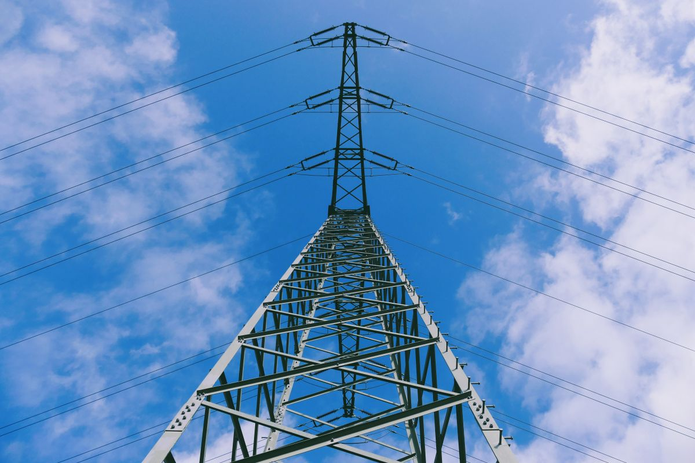
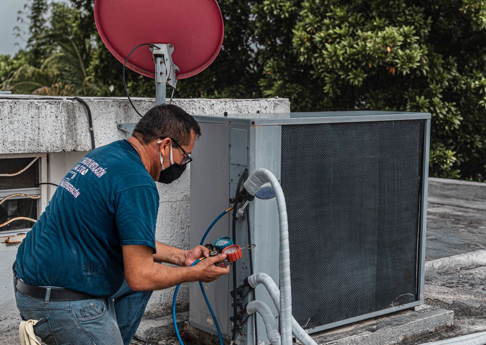

PLN lagi memberi diskon besar. Dalam rangka Hari Listrik Nasional ke-81, PLN memotong 50 persen biaya tambah daya listrik lewat promo Energi Berdikari. Promonya berlaku 22 Oktober sampai 4 November 2026, dan semua pengajuan dilakukan lewat aplikasi PLN Mobile. Kalau daya listrik di rumahmu sudah terasa sempit, ini momen yang pas untuk naik daya dengan biaya setengah harga. Semua keterangan di artikel ini mengikuti pengumuman resmi PLN lewat akun Instagram @plnmobile dan pemberitaan Detik Finance per Oktober 2026.
Tambah daya itu gampangnya begini: kapasitas listrik rumahmu dinaikkan, misalnya dari 900 VA ke 1.300 VA, supaya bisa menyalakan lebih banyak alat elektronik sekaligus tanpa MCB jeglek. Yang didiskon adalah biaya penyambungan tambah dayanya, bukan tagihan listrik bulanannya. Jadi tagihanmu tetap dihitung dari pemakaian, tapi ongkos naik dayanya dipotong setengah.

Tanda daya listrik di rumahmu sudah kurang
Sebelum bicara promo, pastikan dulu kamu memang butuh tambah daya. Tanda yang paling gampang dikenali adalah MCB yang sering jeglek saat AC dan pompa air menyala bersamaan, atau lampu yang meredup sebentar begitu rice cooker mulai memasak. Kalau kejadian itu sering berulang, biasanya bukan listriknya yang rusak, tapi dayanya memang sudah tidak cukup untuk beban di rumahmu.
Alat yang paling banyak menyedot daya di rumah biasanya AC, pompa air, pemanas air, dan rice cooker. Satu AC saja bisa memakan daya ratusan VA, jadi rumah dengan daya 450 VA atau 900 VA cepat kewalahan begitu alat-alat itu dipakai bersamaan. Kalau kamu baru menambah AC atau alat elektronik lain, naik daya memang langkah yang masuk akal, bukan sekadar ikut-ikutan promo.

Syarat yang harus kamu penuhi
Promo ini tidak berlaku untuk semua orang, jadi cek dulu apakah kamu masuk syaratnya. Ketentuannya seperti ini:
- Pelanggan tegangan rendah satu fasa dari semua golongan tarif, dengan daya awal 450 VA sampai 5.500 VA. Daya bisa dinaikkan sampai maksimal 7.700 VA.
- Sudah terdaftar sebagai pelanggan PLN sebelum 1 Oktober 2026.
- Tidak punya tunggakan tagihan listrik atau kewajiban lain yang belum dibayar.
- Satu ID pelanggan hanya bisa memakai promo ini satu kali selama periode berlangsung. Satu akun PLN Mobile bisa mendapat maksimal empat e-voucher, masing-masing untuk ID pelanggan yang berbeda.
Kalau kamu baru pasang listrik sesudah 1 Oktober 2026, sayangnya promo ini tidak berlaku untukmu. Tunggu promo berikutnya saja, karena PLN cukup sering mengadakan potongan tambah daya di momen hari besar.
Cara klaim voucher dan ajukan tambah daya
Voucher diskonnya tidak langsung muncul begitu saja. Kamu harus memancingnya dulu dengan satu transaksi di PLN Mobile. Langkahnya seperti ini:
- Buka PLN Mobile dan pastikan akunmu sudah aktif dengan nomor HP yang terdaftar.
- Beli token listrik kalau meteranmu prabayar, atau bayar tagihan listrik kalau meteranmu pascabayar. Cukup satu kali transaksi lewat aplikasi ini.
- Sesudah transaksi berhasil, buka banner promo Energi Berdikari Hari Listrik Nasional di halaman utama aplikasi.
- Klaim e-voucher tambah daya di halaman promo itu. Voucher yang berhasil diklaim tersimpan di menu Reward.
- Buka voucher itu, lalu tekan Salin Kode untuk menyalin kode vouchernya.
- Masuk ke fitur Ubah Daya dan Migrasi, pilih daya tujuan yang kamu mau, lalu masukkan kode voucher pada tahap pembayaran.
- Selesaikan pembayaran sesuai petunjuk di aplikasi, lalu tunggu petugas PLN menghubungimu untuk proses penyambungan daya.
Kalau banner promonya tidak muncul di halaman utama, coba perbarui dulu aplikasi PLN Mobile ke versi terbaru. Kalau masih belum muncul juga, pastikan transaksimu tadi benar-benar lewat PLN Mobile, bukan lewat aplikasi pembayaran lain, karena hanya transaksi di dalam aplikasi PLN Mobile yang memicu vouchernya.
Berapa biayanya sesudah diskon
Besaran diskonnya setengah dari biaya normal, dan besarannya tergantung daya awal dan daya tujuan yang kamu pilih. Tiga contoh yang diumumkan PLN:
- Dari 450 VA naik ke 900 VA: Rp210.825, dari harga normal Rp421.650.
- Dari 900 VA naik ke 1.300 VA: Rp187.400, dari harga normal Rp374.800.
- Dari 1.300 VA naik ke 7.700 VA: Rp3.100.800, dari harga normal Rp6.201.600.
Daftar lengkap untuk kombinasi daya lainnya bisa kamu lihat langsung di aplikasi PLN Mobile saat mengajukan, karena biayanya dihitung dari daya awal dan daya tujuan yang kamu pilih. Yang jelas, makin besar lompatan dayanya, makin besar juga nominal yang kamu hemat.
Hal yang perlu kamu hitung sebelum naik daya
Diskon 50 persen memang menggoda, tapi tambah daya bukan keputusan yang bisa dibatalkan seenaknya. Ada beberapa hal yang perlu kamu tahu sebelum mengajukan:
- Biaya penyambungan dibayar penuh di muka, tidak bisa dicicil. Yang bisa dicicil sampai 12 kali hanya Uang Jaminan Langganan, dan itu khusus pelanggan pascabayar.
- Sesudah naik daya, kamu tidak boleh menurunkan daya lagi selama minimal satu tahun.
- Promo ini tidak bisa digabungkan dengan program diskon lain, dan tidak berlaku untuk permohonan yang butuh perubahan jaringan, ganti fasa, atau ganti golongan tarif.
- Pikirkan dulu kebutuhanmu. Kalau AC baru satu dan pemakaianmu masih longgar, naik dari 900 VA ke 1.300 VA biasanya sudah cukup. Naik terlalu besar hanya membuat biaya tambah dayanya lebih mahal tanpa terasa manfaatnya.
Kalau masih ragu berapa daya yang pas untuk rumahmu, kamu bisa menghubungi contact center PLN di nomor 123 sebelum mengajukan. Lebih baik bertanya dulu daripada menyesal sesudah daya terlanjur naik dan tidak bisa diturunkan selama setahun.
Intinya
Promo Energi Berdikari memberi diskon 50 persen biaya tambah daya listrik sampai 4 November 2026. Syaratnya sederhana: pelanggan lama sebelum 1 Oktober 2026, tidak ada tunggakan, dan satu transaksi di PLN Mobile untuk mendapatkan e-vouchernya. Klaim vouchernya, ajukan lewat fitur Ubah Daya dan Migrasi, dan bayar sebelum promonya habis. Kalau daya rumahmu memang sudah sempit, sayang sekali kalau kesempatan ini lewat begitu saja. Semua keterangan mengikuti pengumuman resmi PLN per Oktober 2026.
← Kembali ke Other